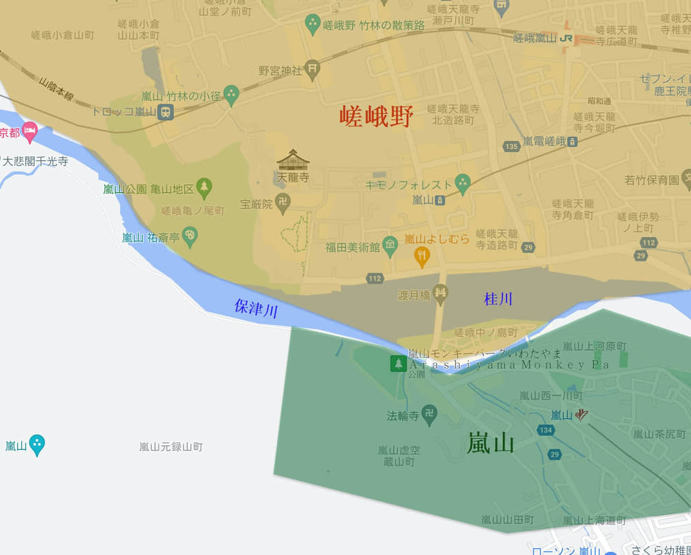

沿京都嵐山．保津川畔一直慢慢走, 約二十分鐘便來到渡月橋 (Togetsukyo Bridge)右岸的橋頭, 只見橋兩邊的步道都擠滿了旅客, 十分熱鬧。
渡月橋別名嵐橋, 全長155公尺, 推斷約日本平安時代初期整修大堰川時所建, 四百多年後, 龜山天皇在某個夜晚, 看到月亮在橋的正上方緩緩由一邊移動到另一邊, 猶如月亮渡橋, 這便是橋的名稱由來。
渡月橋在初建時位於現址200公尺上游處, 已在應仁之亂中焚毀, 其後因被洪水沖毀而多次重建, 在1606年, 大堰川上游的保津川進行開鑿工程, 才將渡月橋移至現在的位置, 如今我們看到的渡月橋是於1934以水泥重新整修, 但欄杆依然使用木材, 保存了當年的風貌。
看見渡月橋頭前的商場十分熱鬧, 而肚子實在太餓, 便走去看看有沒有一些小吃。

經過一間店舖, 炸蝦棒只賣300日元, 十分便宜, 便買了一條, 坐在店舖旁的櫈子吃, 味道很好!
吃了一些東西後, 有如大力水手吃完菠菜一樣, 精神百倍, 可以開始遊覽渡月橋了。我的遊覽路線是這樣的: 首先從桂川(保津川)右岸沿渡月橋左邊步道走到對面, 然後循橋另一邊步道返回這裡, 這便可以欣賞河的上下游景色。
桂川 (大堰川、保津川)
桂川(Katsuragawa)發源自京都広河原北部的佐々里峠, 是流經京都府的淀川水系的一級水系。河流會依據經過的區域而有不同的名稱, 在京都府京北地区稱為上桂川, 京都府南丹市園部地區稱為桂川, 京都府南丹市八木地區到龜岡稱為大堰川, 京都府龜岡到嵐山稱為保津川, 當流過嵐山渡月橋後再稱為桂川, 在京都伏見區和鴨川合流, 到大阪和木津川及宇治川合流為淀川。

渡月橋上遊客太多, 走完後都沒有什麼印象。
在渡月橋上邊走邊看上游的保津川 (大堰川)。據一些資料所說, 桂川以渡月橋為分界, 上游是保津川(也有人稱大堰川), 下游是桂川。
來到大堰川中的一個小島, 名稱是中之島, 而渡月橋也因此分為兩段。

從中之島回頭看第一段的渡月橋。
走過中之島, 來到第二段的渡月橋 —渡月小橋 , 有些人也稱之為中之島橋, 長度明顯比第一段短很多。
走過渡月小橋, 便來到嵐山下的地方。
我選擇了在橋頭轉右沿保津川 (桂川)畔走, 轉頭從側面看渡月小橋。
接著沿保津川 (桂川)畔慢慢走。很奇怪! 明明渡月橋上人山人海的, 起碼都有二百人吧! 但這裡竟然沒有人的! 真想不通!
經過岩田山公園展望台 (嵐山猴子公園) 入口, 不過要入場費的, 不去了。

有興趣的可以選擇乘船遊桂川, 不過今天沒有營業。
這裡是欣賞京都嵐山．桂川風光及渡月橋的最佳地方。在這裡靜靜的欣賞, 才感覺到桂川的風景也十分優美的。
對岸的嵐山公園龜山地區和山麓上的嵐山公園 龜山地區頂上展望台, 我剛才便是從那裡走來這裡的。
哦! 前面的一段步道有落石, 禁止通行, 不可以繼續向前走了!